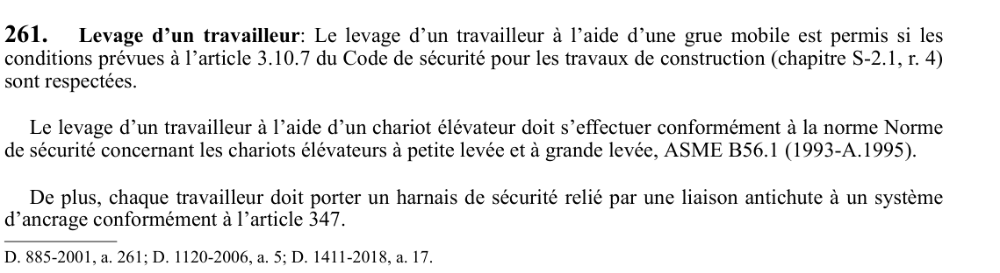

art-261-RSST : levage d'un travailleur
Un article du wiki ⚖️ Recueil législatif
🌐 LegisQuébec · 📄 PDF officiel
Texte officiel : capture du PDF

🔗 Voir art. 261 RSST dans le PDF (page 72) · texte à jour au 1er juin 2024
📚 Source légale : D. 885-2001, a. 261; D. 1120-2006, a. 5; D. 1411-2018, a. 17. · LégisQuébec
En bref
Levage d'un travailleur: Le levage d'un travailleur à l'aide d'une grue mobile est permis si les conditions prévues à l'article 3.10.7 du Code de sécurité pour les travaux de construction (chapitre S-2.1, r. 4) sont respectées. Le levage d'un travailleur à l'aide d'un chariot élévateur doit s'effectuer conformément à la norme Norme de sécurité concernant...
Voir aussi
- art. 260 : interdiction
- art. 262 : engin élévateur à nacelle
- ⚖️ Loi habilitante : LSST
- ↑ Index du bloc : Manutention et transport du matériel
Pages qui pointent ici (3)
- art-260-RSST, interdiction Recueil législatif
- art-262-RSST, engin élévateur à nacelle Recueil législatif
- RSST - Section 23 - Manutention et transport du matériel (art. 243-287) Recueil législatif